Propozycje logo dla Aircool
Każde logo w wariancie poziomym (do nagłówka strony, papieru firmowego, samochodu) i kwadratowym (do Google Business Profile, awatarów, faviconu). Po wyborze - powiedz mi numer i podstawię go jako główne logo wszędzie.
Jak wybrać: obejrzyj na jasnym tle (wariant poziomy) i na ciemnym (np. baner). Mniej=lepiej. Logo ma działać czytelnie również w bardzo małych rozmiarach (np. 32x32px favicon).
AKTUALNE - co jest podstawione na stronie
12 · Klasyczna pigułka (rekreacja oryginału) - GŁÓWNE LOGO
Wierna rekreacja Twojego oryginalnego logo z aircool.net.pl, ale w SVG (skaluje się idealnie). Srebrno-szary gradient pigułki, AIR niebieskie, COOL ciemnoszare, bold Arial Black. Aktualnie podstawione jako logo w nagłówku strony.
Wariant poziomy (header strony)
Kwadrat
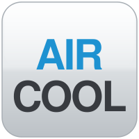
Na ciemnym
7 · Stacked tight (sam wordmark) - FAVICON / TAB
AIR / COOL stacked bardzo blisko, na białym tle. Aktualnie podstawione jako favicon (ikona w karcie przeglądarki). Świetnie czytelne nawet w 16x16 px.
Wariant poziomy
Kwadrat (favicon)
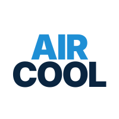
Na ciemnym
Propozycje na Google Maps (do wyboru zamiast 11)
13 · Gruba śnieżynka + AIRCOOL pod spodem
Wariant 6, ale ze śnieżynką jeszcze grubszą i bardziej dominującą. AIRCOOL jako wsparcie pod spodem. Maksymalna rozpoznawalność jako stempel.
Same wymiary co Google Maps
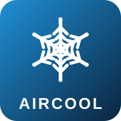
Kwadrat 200px
Mały (jak avatar)
14 · Okrągły avatar (Google Business Profile preferuje okrągłe)
Pełne koło z gradientem, śnieżynka w środku, AIRCOOL pod spodem. Google Business Profile renderuje awatary w kółku - tu logo jest już zaprojektowane jako koło, więc nie tnie się żaden element.
Pełna wielkość
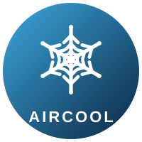
Avatar
Mały
15 · Klasyczna pigułka + śnieżynka u góry
Hybryda: srebrny pigułkowy styl Twojego oryginału + śnieżynka u góry + AIR/COOL stacked. Spójność z głównym logo (12).
Pełna wielkość
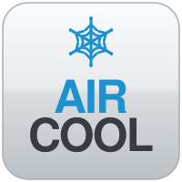
Kwadrat
Mały
Z porządną śnieżynką (poprzednia tura)
6 · Stempel kwadratowy + AIRCOOL z prawej
Twoja prośba: ciemny kwadrat z grubą, szczegółową śnieżynką po lewej i AIRCOOL z prawej. Wariant kwadratowy = sama śnieżynka jako stempel - idealny do Google Maps, Facebooka, awatarów. Bardzo wyrazisty, „kojarzy się z chłodem” natychmiast.
Wariant poziomy
Kwadrat (Google Maps)
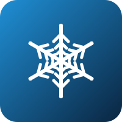
Na ciemnym
9 · Otwarta śnieżynka + AIRCOOL z prawej
Wariant „lekki” opcji 6 - śnieżynka bez tła, w oryginalnym niebieskim kolorze. Bardziej minimalistyczne. Dobre dla osób, które wolą aby logo nie przytłaczało.
Wariant poziomy
Kwadrat
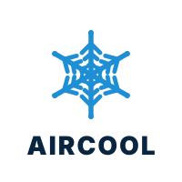
Na ciemnym
10 · Sześciokąt ze śnieżynką
Sześciokątny stempel z gradientem niebiesko-granatowym. Sześciokąt nawiązuje do struktury kryształu lodu (śnieg ma 6-krotną symetrię). Najbardziej „dizajnerska” opcja.
Wariant poziomy
Kwadrat (cały hex)
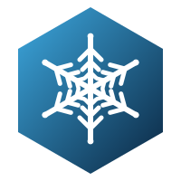
Na ciemnym
Z AIR / COOL ułożonymi blisko siebie (stacked tight - Twoja prośba)
7 · Stacked tight (sam wordmark)
AIR niebieskie u góry, COOL granatowe pod spodem - bardzo blisko, bez ozdobników. Najbardziej minimalistyczne. Świetnie skaluje się jako kwadrat - litery wypełniają cały kwadrat (czytelne nawet jako 32x32 favicon).
Wariant poziomy
Kwadrat (Google Maps)
Na ciemnym
8 · Stacked tight + śnieżynka z lewej
Opcja 7 + porządna śnieżynka po lewej stronie. Połączenie obu Twoich pomysłów w jednym - wordmark stacked tight i jasny komunikat „chłodnictwo”.
Wariant poziomy
Kwadrat (śnieżynka nad)
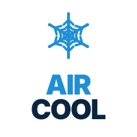
Na ciemnym
11 · Mała śnieżynka + AIR / COOL stacked
Wariant 8, ale ze śnieżynką mniejszą i bardziej proporcjonalną do tekstu. Dla osób, którzy chcą obu elementów ale w bardziej harmonijnej proporcji.
Wariant poziomy
Kwadrat
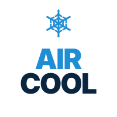
Na ciemnym
Wcześniejsze propozycje (możesz pominąć)
1 · Klasyczny refresh (obecny domyślny)
Czysty wordmark AIR niebieskie + COOL granatowe, bez ikony.
Wariant poziomy
Kwadrat
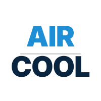
Na ciemnym
3 · Pigułka z gradientem
Najbliżej oryginalnej formy „pigułki” z poprzedniego logo, w nowoczesnej formie.
Wariant poziomy
Kwadrat
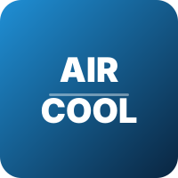
Na ciemnym
Wszystkie warianty są w SVG - skalują się bez utraty jakości na każdym ekranie i każdej drukarce. Po wyborze: PNG/JPG do druku eksportujemy z SVG w dowolnej rozdzielczości.